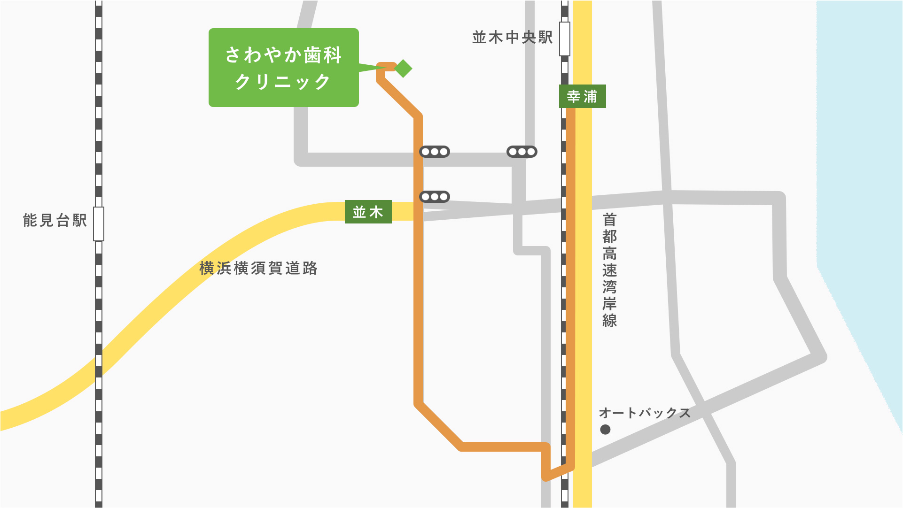

ご予約について
時間約束制（但し、急患・初診は随時受付ております）ですので、来院前にはできるだけお電話をお願い致します。 患者さんへの無用な待ち時間を減らし、治療に必要な時間を十分確保するためにもどうぞご協力をお願い致します。
当院までのアクセス
お車でお越しの場合

時間約束制（但し、急患・初診は随時受付ております）ですので、来院前にはできるだけお電話をお願い致します。 患者さんへの無用な待ち時間を減らし、治療に必要な時間を十分確保するためにもどうぞご協力をお願い致します。